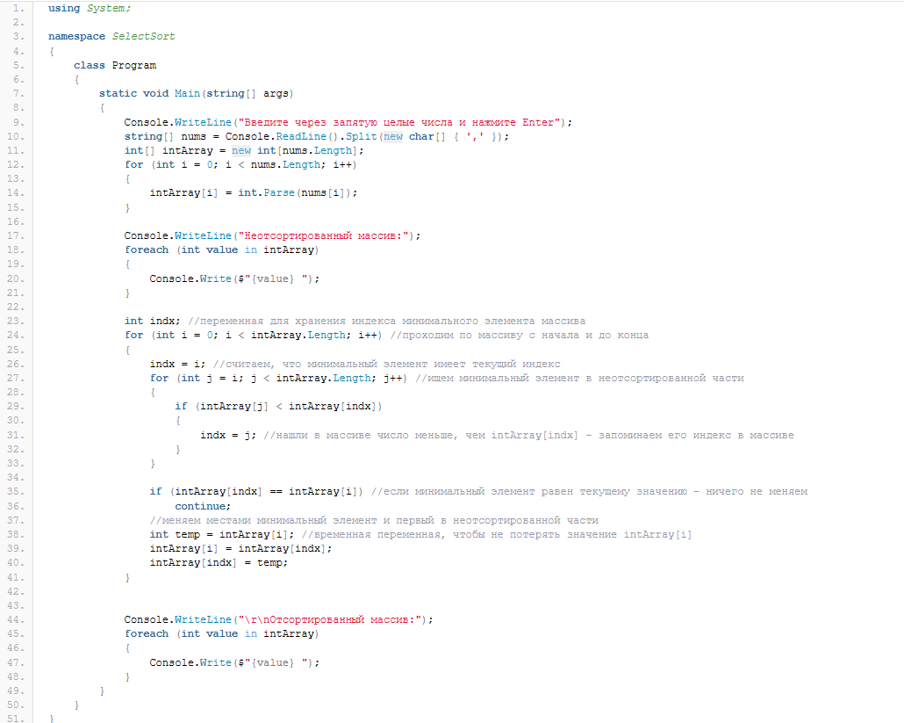
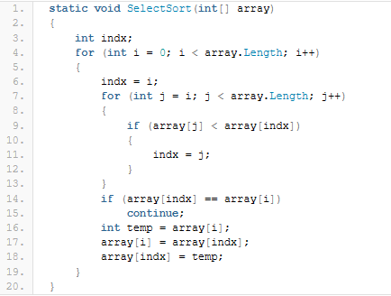
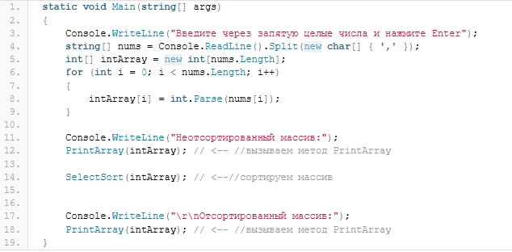
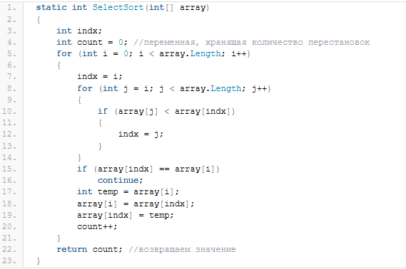
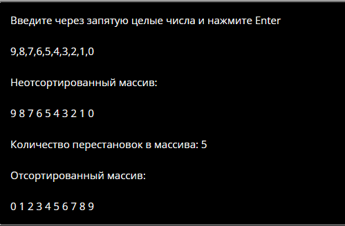
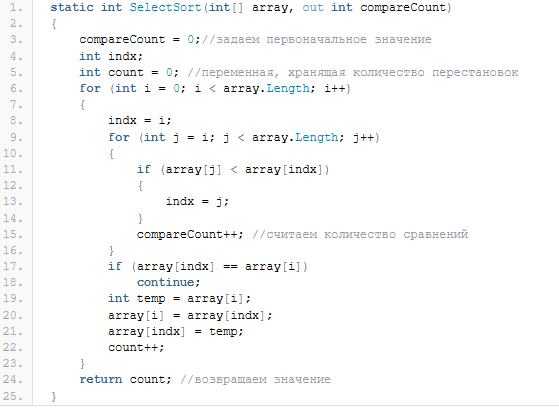
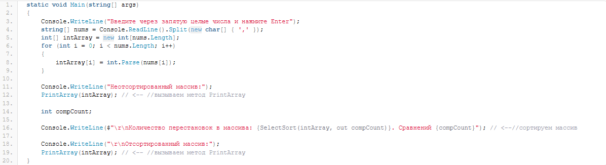

Содержание
В самом общем случае, определение метода в C# выглядит следующим образом:
[модификаторы] тип_возвращаемого_значения Название_метода ([параметры])
{
тело метода
}
обязательными элементами для определения метода в C# являются: тип возвращаемого значения и имя метода. Самый первый пример метода, который мы могли видеть в C# — это метод Main(), который является и точкой входа для нашего консольного приложения. Рассмотрим описание этого метода:
static void Main(string[] args)
{
Console.WriteLine("Hello World!");
}
Посмотрим на исходный код нашей программы:

здесь у нас в методе Main() чего только не напихано — и вывод массива на экран и сортировка выбором. Обычно, участок кода выделяется в отдельный метод, если он (код) повторяется в программе многократно или необходимо выделить решение какой-либо задачи. В нашем же случае в программе можно выделить два отдельных метода:
Метод вывода массива на экран (этот код у нас повторяется дважды — перед сортировкой и после сортировки)
Метод, который будет сортировать массив.
Начнем с метода вывода массива на экран. Название метода должно максимально отражать его суть — пусть название метода будет PrintArray. Далее, что будет возвращать наш метод? В данном случае, ничего возвращать не требуется, поэтому будем использовать void. И, наконец, параметры. Задача метода — вывести на экран массив. Чтобы можно было в дальнейшем многократно использовать наш метод, в качестве параметра метод должен принимать какой-либо массив. Итого, получается вот такое описание метода:
static void PrintArray(int[] array)
{
}
В теле метода мы должны разместить код, который выводит массив на экран, то есть весь метод целиком, включая описание и тело метода у нас должны получиться вот такими:
static void PrintArray(int[] array)
{
foreach (int value in array)
{
Console.Write($"{value} ");
}
}
Здесь мы в цикле foreach перебираем массив, переданный нам в качестве параметра и выводим значения на экран в виде строки.
Второй метод — это метод сортировки массива. Опять же, имя — так как у нас используется сортировка выбором, то пусть метод будет называться SelectSort. Возвращаемое значение также оставляем пустым (void), так как перед нами не стоит задачи хранить оба варианта массива (сортированный и несортированный). В качестве параметра будет выступать, опять же массив целых чисел. Весь метод должен выглядеть вот так:

Чтобы вызвать метод C# необходимо написать его имя и, при необходимости, в круглых скобках передать методу необходимые параметры. Методы мы будем вызывать внутри метода Main() вот так:

Теперь можно запустить программу и убедиться, что всё работает ровно так, как и в прошлый раз, НО при этом можно назвать следующие преимущества использования методов в C#:
До сих пор мы имели дело с методами, которые не возвращают значений (с void в качестве возвращаемого значения). Что делать если метод должен вернуть какое-либо значение, например, если мы хотим узнать сколько замен провел наш метод SelectSort, чтобы отсортировать массив по возрастанию? Для этого наш метод должен:
в качестве возвращаемого значения уже иметь не void, а число int (количество перестановок у нас измеряется целыми числами — не может быть 1,5 перестановки)
использовать в теле метода оператор return.
Оператор return завершает выполнение текущего метода и возвращает значение из этого метода. Вызов оператора return выглядит следующим образом:
return[(expression)]
expression — это значение, которое должен вернуть метод. Если оператор в коде выглядит вот так:
return;
то метод не вернет ничего, но при этом завершит свою работу. Давайте перепишем наш метод SelectSort, чтобы получать не только отсортированный массив, но и количество перестановок, которые были сделаны.

Теперь наша программа сортировки массива станет ещё более информативной. Метод SelectSort можно вызвать вот так:
Console.WriteLine($"Количество перестановок в массива: {SelectSort(intArray)}");
Здесь мы одной строкой и сортируем массив и выводим в консоль количество перестановок. Результат работы такой программы в консоли будет выглядеть следующим образом:

Что, если наш метод должен вернуть не одно, а сразу несколько значений? Опять же,возвращаясь к нашему методу SelectSort — что делать, если нам необходимо вернуть не только количество замен, но и количество сравнений элементов (количество итераций внутреннего цикла for)? Такая задача может решаться несколькими способами, я же покажу лишь один из них — одно значение (количество перестановок) мы будем передавать в качестве возвращаемого значения, а второе — через параметр метода. Сделать это можно, объявив метод следующим образом:
static int SelectSort(int[] array, out int compareCount)
Обратите внимание на то, что написано в круглых скобках после запятой. Ключевое слово out используется для передачи аргументов (параметров) по ссылке. Есть также аналогичное ключевое слово ref, но ref требует, чтобы перед передачей в метод переменная должна была инициализирована, out же этого не требует. Теперь наш метод принимает два параметра один из которых обязательно должен быть переменной. То есть, мы можем вызвать наш метод вот так:
SelectSort(intArray, out compCount)
оба параметра — переменные. А можем вот так:
SelectSort(new int[] { 9, 8, 7, 6, 4, 1, 2, 3, 0 }, out compCount);
здесь мы передаем в первом параметре значение — массив целых чисел, а во втором переменную (правда, то как будет выглядеть сортированный массив мы уже не увидим). Но вот такой вызов метода уже не пройдет:
SelectSort(new int[] { 9, 8, 7, 6, 4, 1, 2, 3, 0 }, out 15);
Здесь я попытался передать не переменную, а значение и компилятор C# выдал ошибку:
Надеюсь, понятно. Теперь вернемся к нашему методу и перепишем его следующим образом:

Теперь наш метод C# возвращает уже не одно, а два значения: количество перестановок и количество сравнений, а нашу программу можно переписать следующим образом:

Выше я уже рассказал, что в методах может использоваться оператор return, который обеспечивает выход из метода и возврат значения метода в вызывающий метод. При этом, оператор return может использоваться и в методах с типом void для прерывания работы метода. Например, следующий код с точки зрения синтаксиса полностью верный:
static void EmptyMethod()
{
return;
Console.WriteLine("Hello world");
}
Но, при этом, строка с вызовом WriteLine абсолютно бесполезна так как до этой строки мы никогда не дойдем — оператор return заставит нас выйти из метода сразу же, не достигая конца тела метода. Поэтому на будущее стоит запомнить,что return необходимо располагать именно в том месте где действительно необходимо обеспечить выход из метода, например, перед последней фигурной скобкой.
Если тело метода содержит всего одну инструкцию, то допускается сокращенная запись такого метода. Например, пусть у нас есть такой метод:
static void PrintHello(string message)
{
Console.WriteLine(message);
}
тело метода содержит всего одну инструкцию — вывод сообщения в консоль. В этом случае, мы можем сократить наш метод до следующей записи:
static void PrintHello(string message) => Console.WriteLine(message);
то есть, вместо фигурных скобок мы используем оператор => и далее сразу пишем содержимое тела метода (единственную инструкцию).
В различных источниках информации, кроме названия «метод» можно встретить также и такие названия как «функция» и «процедура». В чем же принципиальное отличие метода, функции и процедуры? Применительно к C#, в отличие, например, от Delphi/Pascal — это, скорее, философский вопрос. На мой взгляд, в C# все эти три понятия тождественны.
Обычно, функцию определяют так: функция — это метод, который возвращает какое-либо значение. Например, наш метод SelectSort возвращает значение int. То есть, технически мы можем сказать, что SelectSort — это функция.
В свою очередь, процедура — это метод, который не возвращает ничего. Опять же, чисто технически, можно сказать, что наш метод PrintArray — это процедура. Но, если обратить внимание на справочник по C#, то там «void — указывает тип возвращаемого значения для метода, который не возвращает значения.» Вот такая вот философская задача. То есть вроде как и нет возвращаемого значения, но всё же тип возвращаемого значения — void.
Поэтому, можно констатировать следующее: метод — это обобщенное название и функций и процедур, а в C# все эти три понятия тождественны, но за одним исключением — в отдельную группу методов выделяются как раз-таки «локальные функции«, о которых мы поговорим позднее.
Сегодня мы познакомились в общих чертах с методами C#, научились определять собственные методы, обеспечивать возврат из метода одного и нескольких значений, а также значительно улучшили нашу программку для сортировки массива методом вставок. К работе с методами мы будем возвращаться ещё неоднократно, так что, эту информацию постараемся запомнить как можно лучше.